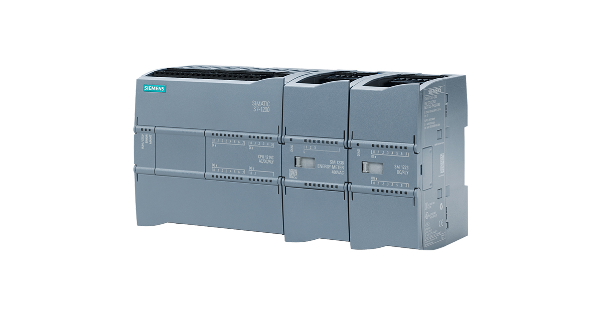

Główna
Podstrona1
Podstrona2
Podstrona3
Języki programowania PLC
Języki programowania PLC są znormalizowane wedle jednej z części normy IEC 61131. Norma ta została stworzona w 1993 roku przez Międzynarodową Komisję Elektrotechniczą, aktualnie obowiązuje jej trzecia edycja opublikowana w 2013 roku. Definiuje ona podstawowe pojęcia, zasady ogólne, model programowy i komunikacyjny oraz typy i struktury danych. W normie IEC 61131 wyodrębniono dwa typy języków programowania tekstowe i graficzne. Sterownik Siemens S7-1200 Przejdź do strony Siemensa